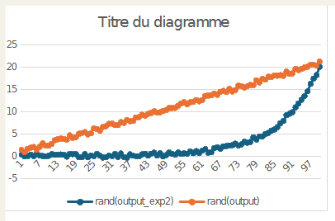
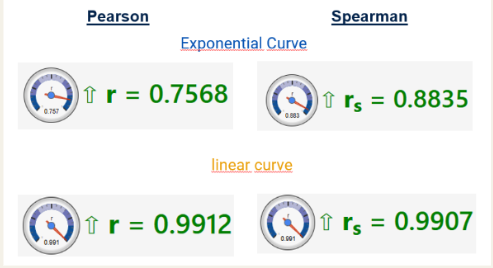

Objectif du projet
L’objectif était de réduire le temps de traitement et d’analyse en automatisant la recherche des variables les plus corrélées à une variable cible.
Problématique
Comment identifier automatiquement les facteurs les plus influents dans un jeu de données et proposer un modèle explicatif fiable sans réaliser toute l’analyse manuellement ?
Méthodologie
Préparation des données
Importation du jeu de données, sélection de la variable cible et préparation des variables exploitables pour l’analyse.
Analyse des corrélations
Utilisation du coefficient de Spearman pour repérer les variables ayant une relation monotone avec la variable étudiée.
Modélisation automatique
Test de plusieurs lois polynomiales afin de sélectionner automatiquement le modèle le plus performant.
Interprétation
Analyse des résultats obtenus pour comprendre les facteurs influents et faciliter la prise de décision.
Outils utilisés
Compétences développées
Résultat


Le programme détecte automatiquement les variables les plus influentes sur la variable cible, puis ajuste le modèle polynomial le plus adapté. Cette approche permet d’obtenir une analyse plus rapide et plus fiable, tout en facilitant l’interprétation des résultats.